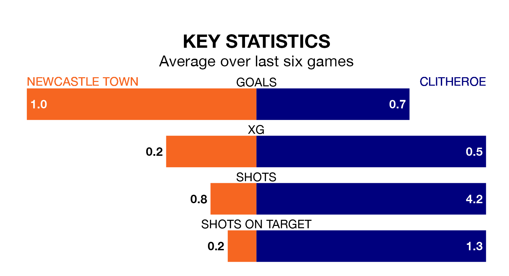

Newcastle Town host Clitheroe at the Lyme Valley Stadium on Saturday on the back of three consecutive wins in Northern Premier League Division One West.
Newcastle have picked up 10 points from their last six games, and they face a Clitheroe side who have lost their last two matches, and collected six points from the last possible 18.
With 37 goals in 22 games so far this season, Clitheroe are scoring more than average in the league with 1.7 goals per game. And they are conceding fewer than average, letting in 28 goals at a rate of 1.3 per game.
Newcastle, meanwhile, are below average scorers, with 1.2 goals per game, compared to a league average of 1.4. They have conceded 1.3 goals per game.
In the last five years, Newcastle and Clitheroe have played each other on five occasions. Newcastle won one of them and Clitheroe the other.
On average, Newcastle scored 0.6 goals and Clitheroe 2.4 in those matches.
Their last meeting was on October 21, when Clitheroe won 2-1 at home.
Town are 14th in the table after 23 games, of which they have won nine and drawn four, earning 31 points.
The visitors are six places ahead of the home side in eighth, with nine wins and six draws putting them on 33 points.
Newcastle's last match was on January 20, a 3-0 win against Avro.
Clitheroe drew 0-0 with Stalybridge Celtic last time out, on January 13.
Updated: 09:18 (UTC), 23/01/24